Focus Feed 홈 — 깔끔·산뜻 발견 피드 + 라디오
Lazyweb Quick References · 2026-06-24 · 끌리는 인디 제품 10선
끌리는 제품들은 "잡음 없는 소스 피드(흰 배경·작은 카드) + 원클릭 Play All 라디오" 두 축으로 수렴한다.
sort.to("distraction-free reader, add your favorite sources")가 Focus Feed 포지셔닝과 사실상 동일하고,
NYT Listen의 "Today's Stories + Play All"이 Scan → Pick → Play 흐름을 그대로 보여준다.
Patterns — 먼저 답
1. 깔끔한 소스 피드 — 흰/단색 배경, 카드 1줄(작은 아바타 + 제목 + 메타), 잡음 0. 그리드(유튜브) 아니라 세로 리스트 . 정렬 토글·카테고리는 상단 한 줄.
2. Play All 라디오 + 큐 + 미니플레이어 — 상단 큰 [▶ Play All] 한 번으로 스트림 시작, 하단 고정 미니플레이어, 별도 Queue 탭.
3. 마찰 0 캡처 — 확장/북마클릿으로 "지금 이거 저장".
핵심: 유튜브를 닮지 마라. 끌리는 앱들은 그리드·무한스크롤·썸네일 폭격이 아니라 여백·세로 리스트·작은 단위·한 번의 큰 액션(Play All) 으로 차분함을 만든다 = 네가 말한 "가볍고 산뜻".
Pattern A — 깔끔한 소스 피드 (홈의 척추)
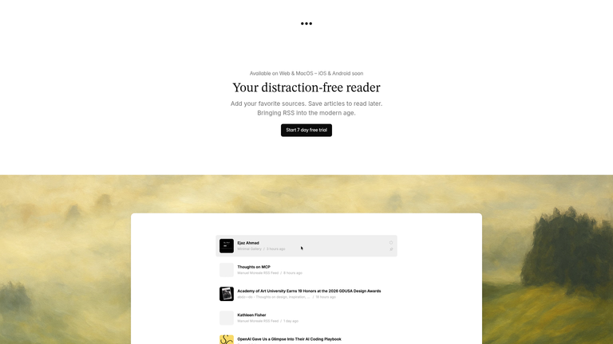
sort.to — "Your distraction-free reader. Add your favorite sources." 흰 배경 + 작은 소스 아바타 카드 세로 리스트. Focus Feed 포지셔닝과 거의 동일. Web
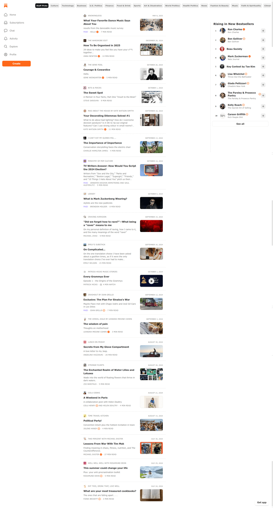
Substack browse — 추천 포스트 세로 피드 + 카테고리 탭 + "Rising" 랭킹.Lazyweb
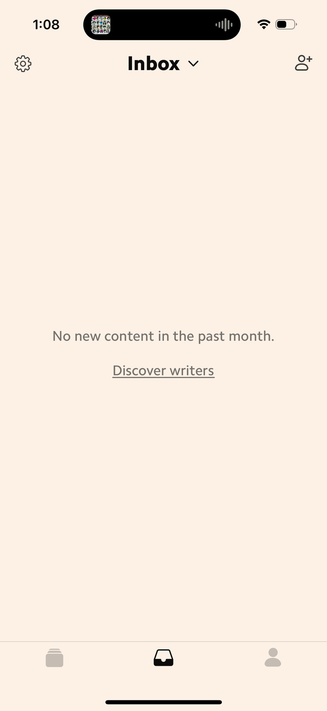
Matter — 뉴스레터 인박스 피드. 로고+헤드라인+스니펫+받은시간. 차분한 훑기 미감.Lazyweb
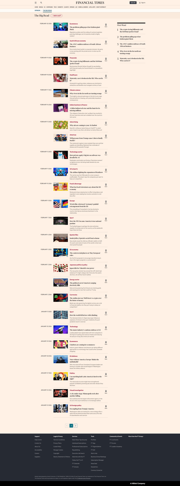
FT The Big Read — 썸네일+카테고리+날짜 세로 피드, 카드마다 북마크/팔로우.Lazyweb
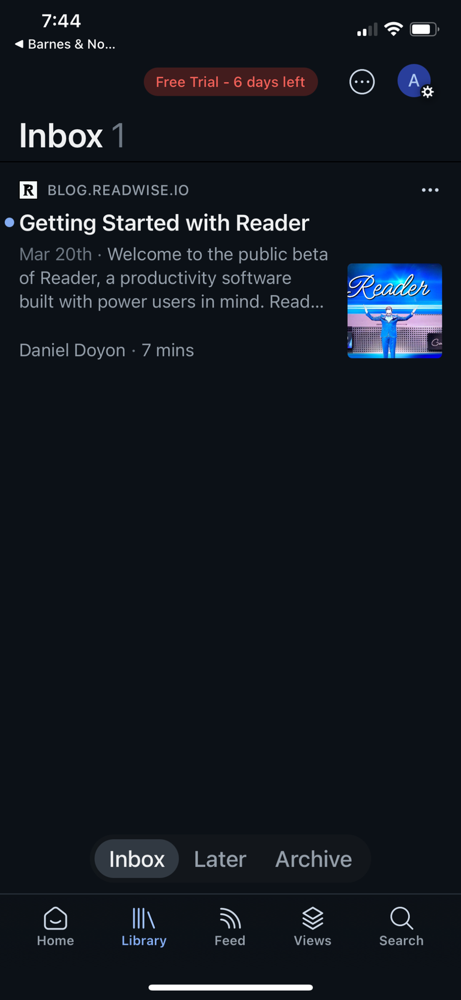
Readwise Reader — "Daily Digest" 피드 + 저장/숏리스트/태그. 깊이 콘텐츠 미감.Lazyweb
공통점: 세로 리스트 + 작은 카드 + 여백 + 저장/팔로우가 카드에 붙음. 그리드 없음.
Pattern B — Play All 라디오 + 큐 + 미니플레이어 (좌측 모니터용)
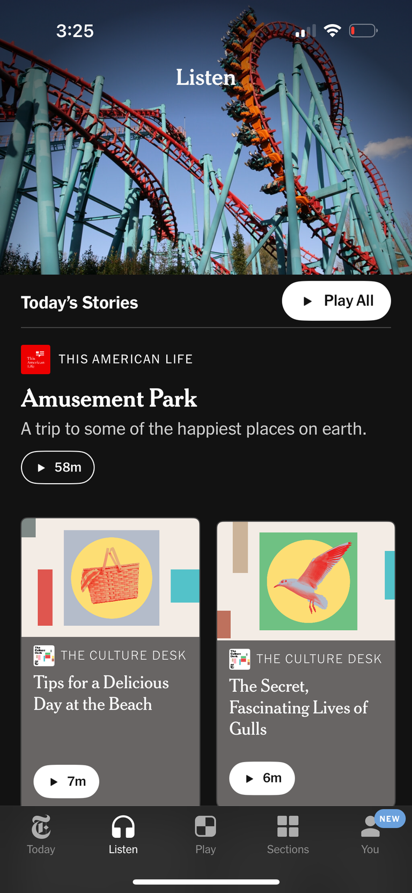
NYT Listen — "Today's Stories" 옆 [▶ Play All] , 히어로 카드 + 2단 카드(각 ▶·시간), 하단 탭. Scan→Pick→Play 그대로. Lazyweb
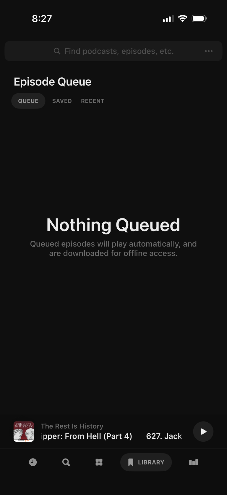
Neuecast — Episode Queue (Queue/Saved/Recent) + 하단 고정 미니플레이어.Lazyweb
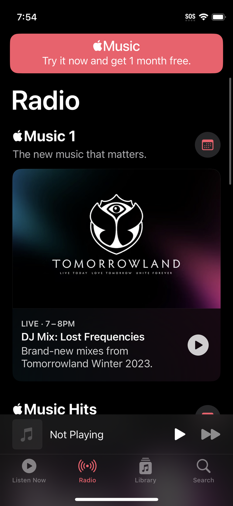
Apple Music 라디오 — 큰 프로모 카드 + ▶ + 하단 미니플레이어 바.Lazyweb
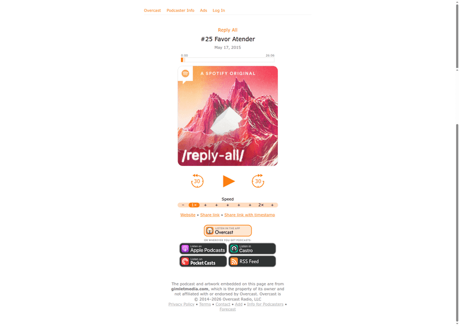
Overcast — 군더더기 없는 재생 페이지(타임라인·속도·스킵). 미니멀 플레이어.Web
공통점: 상단 큰 Play All 1개 + 하단 고정 미니플레이어 + 별도 Queue.
Pattern C — 마찰 0 캡처
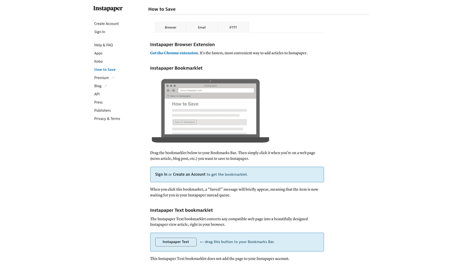
Instapaper — 크롬 확장 + 북마클릿 드래그 로 read-later 저장. 채널 캡처의 정석.Lazyweb
v2 추가 — 영상형 발견 + 숏폼/롱폼 + 라디오 플레이어바
Pattern D — 영상형 발견 (큰 썸네일 피드)
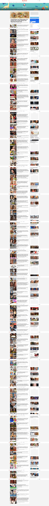
BuzzFeed — 추천 영상 세로 피드(썸네일+제목+채널+조회수+시간) + 우측 추천. 유튜브보다 정돈된 영상 피드. Lazyweb
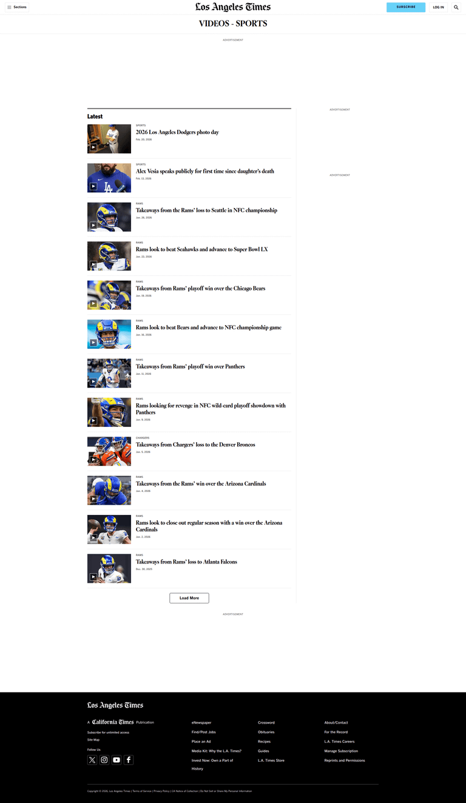
LA Times Video — 영상 스토리 세로 피드(썸네일+카테고리+헤드라인+날짜). 에디토리얼 톤.Lazyweb
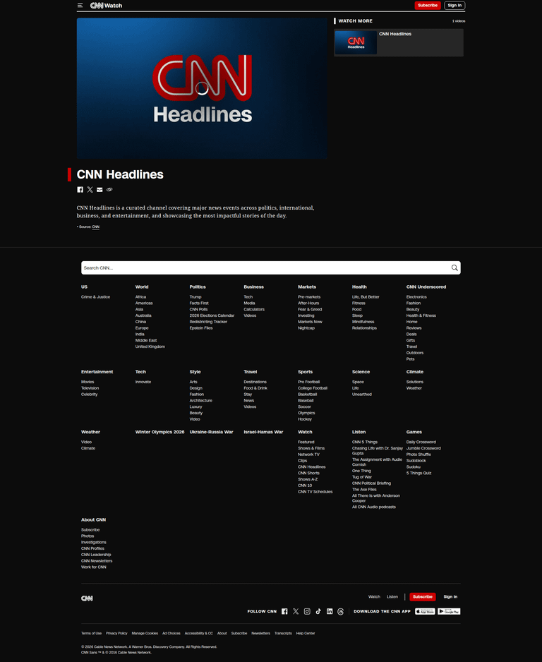
CNN Video — 큰 히어로 썸네일 + ▶ + "Watch more" 사이드. 끌리는 1개 크게.Lazyweb
→ 롱폼 = 세로 리스트지만 썸네일을 더 크게 (sort.to 깔끔함 + 큰 썸네일).
Pattern E — 숏폼/롱폼 공존
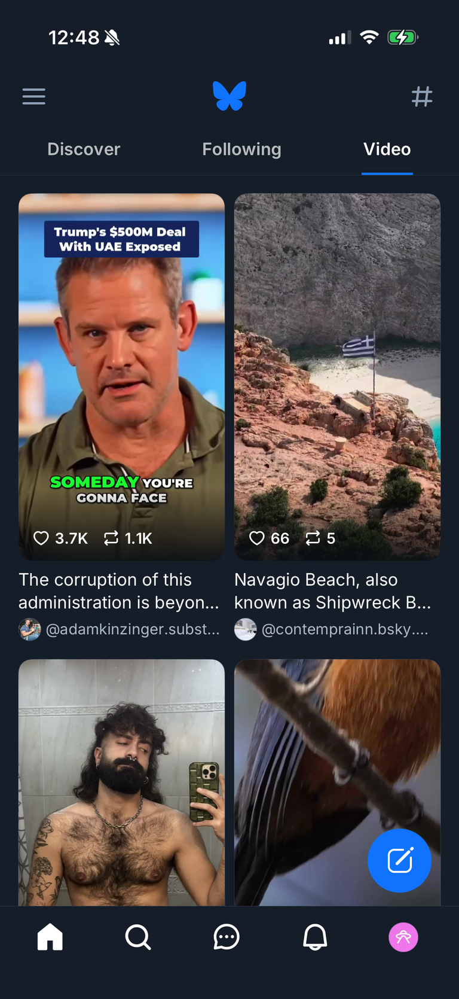
Bluesky Video 탭 — ⭐ 숏폼을 2단 그리드 로(썸네일+제목+핸들+♡). 풀스크린 스와이프 강제 안 함 = 깔끔.Lazyweb
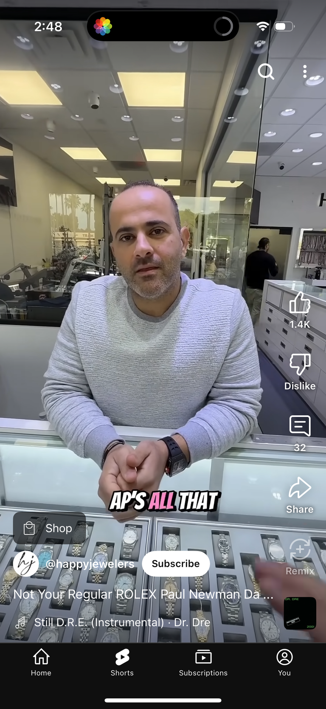
YouTube Shorts — 풀스크린 세로 숏폼 + 하단 탭. 네가 폰에서 보는 그것.Lazyweb
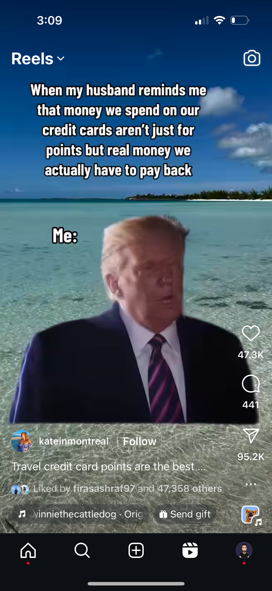
Instagram Reels — 풀스크린 숏폼 표준. 전용 숏폼 뷰가 필요할 때.Lazyweb
→ 롱폼=세로 리스트, 숏폼=별도 그리드 행/탭 (Bluesky형). 섞어 폭격 ❌. 풀스크린 스와이프는 원할 때만 들어가는 전용 모드로.
Pattern F — 라디오 플레이어바 (깔끔 + 끌리게)
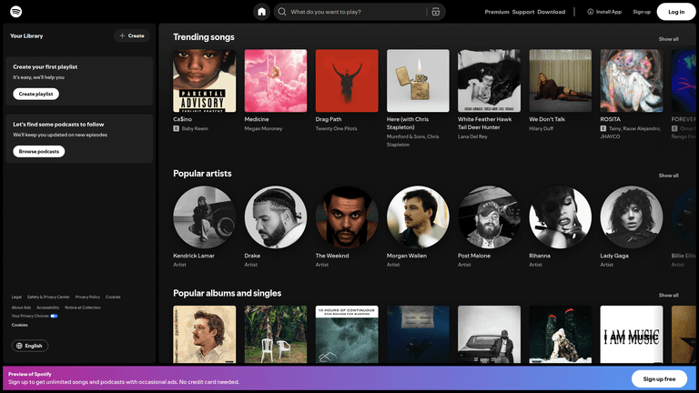
Spotify 데스크톱 — 좌측 사이드바 + 메인 캐러셀 + (하단 고정 플레이어바). 데스크톱 셸 표준.Lazyweb
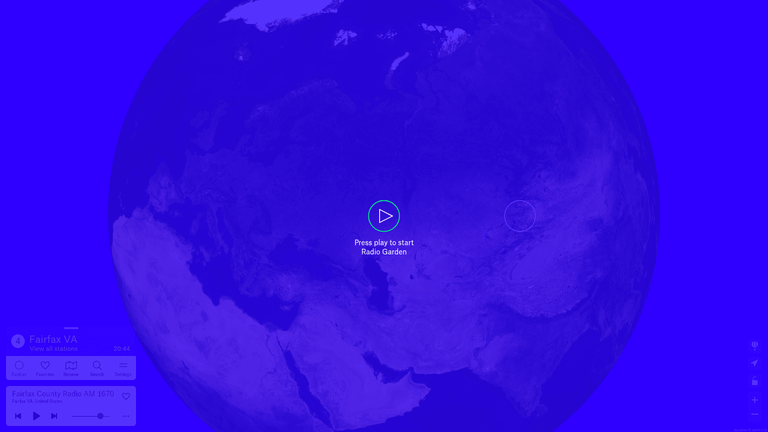
Radio Garden — ⭐ 큰 [▶] 한 번에 재생 + 미니플레이어. "press play" = 0클릭 라디오.Lazyweb
Vinyls — 회전 비닐 now-playing + 스크럽. 끌리는/감각적 플레이어 미감. Lazyweb
→ FF 플레이어바: 하단 고정 + "전체 틀기"로 채움 + vinyls급 감각. 큐는 neuecast/apple-music 하단 미니바 형태.
Focus Feed 홈에 적용 (데스크톱 90%)
피드백 반영: "오늘의 브리핑" 프레이밍 ❌ → 그냥 깔끔한 피드 . 기본 최신순 + 추천순 토글. sort.to 미감 + NYT의 Play All.
┌──────────────────────────────────────────────────────────┐
│ Focus Feed [최신순 ▾ | 추천순] [＋ 채널] [🔍] │ ← 정렬 토글 + 캡처
│ [ ▶ 전체 틀기 ] │ ← Play All (라디오)
├──────────────────────────────────────────────────────────┤
│ ── 숏폼 (오늘) ────────────────────────── 더보기 → │
│ ┌─────┐ ┌─────┐ ┌─────┐ ┌─────┐ ← 가로 스크롤 그리드 │
│ │ ▷ │ │ ▷ │ │ ▷ │ │ ▷ │ (Bluesky형, │
│ └─────┘ └─────┘ └─────┘ └─────┘ 스와이프 강제 X) │
├──────────────────────────────────────────────────────────┤
│ ── 롱폼 ───────────────────────────────────── │
│ ┌────────────┐ 조코딩 · 2시간 전 [▶] [⤓] │
│ │ 큰 썸네일 │ GPT-5.4 로 풀스택 앱 만들기 │ ← 큰 썸네일 세로 리스트
│ └────────────┘ · AI 후크 1줄 (왜 너 취향인지) │ (CNN·sort.to 혼합)
│ ┌────────────┐ Fireship · 5시간 전 [▶] [⤓] │
│ │ 큰 썸네일 │ Next.js 16 의 숨은 기능 7가지 │
│ └────────────┘ │
│ ┌────────────┐ Karpathy · 어제 [▶] [⤓] │
│ │ 큰 썸네일 │ LLM 에이전트 깊게 파보기 (deep dive) │ ← 깊이/인사이트 강조
│ └────────────┘ │
│ · · · 오늘치 끝. 일하러 가셈 ✓ · · · │ ← 유한 (안티 무한스크롤)
└──────────────────────────────────────────────────────────┘
┌──────────────────────────────────────────────────────────┐
│ ◯ 조코딩 — GPT-5.4… ◀◀ ▶ ▶▶ ──●───── 12:30 │ ♡ ✕ │ ← 하단 고정 플레이어바
└──────────────────────────────────────────────────────────┘ (vinyls급 감각 + 큐)
[▶] = 라디오 큐 담기 / 바로 재생 · [⤓] = (Phase 2) 아이디어뱅크로 보내기
정렬 토글 = "올라온 거대로(최신순)" + "추천순(취향 랭킹)" — 네가 둘 다 원한 거
[▶ 전체 틀기] = NYT Play All = 좌측 모니터 1클릭 BGM
Next
이 레퍼런스로 시안(목업) 확정 → 스펙 작성
더 깊은 경쟁 분석: /lazyweb-design-research
영상형 발견(큰 썸네일) 레퍼런스 더 필요하면 추가 검색